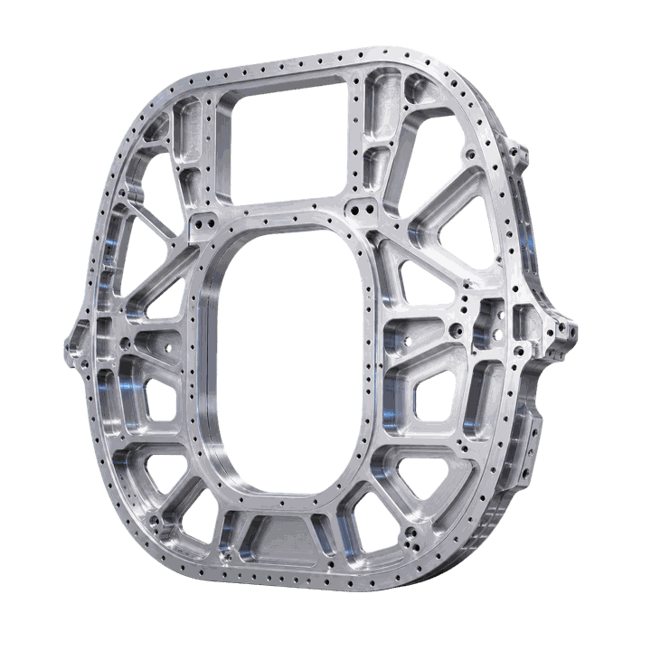
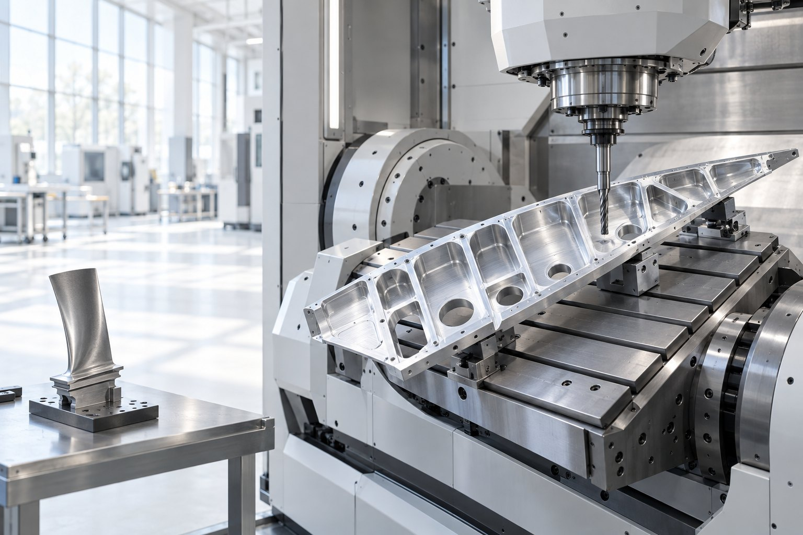
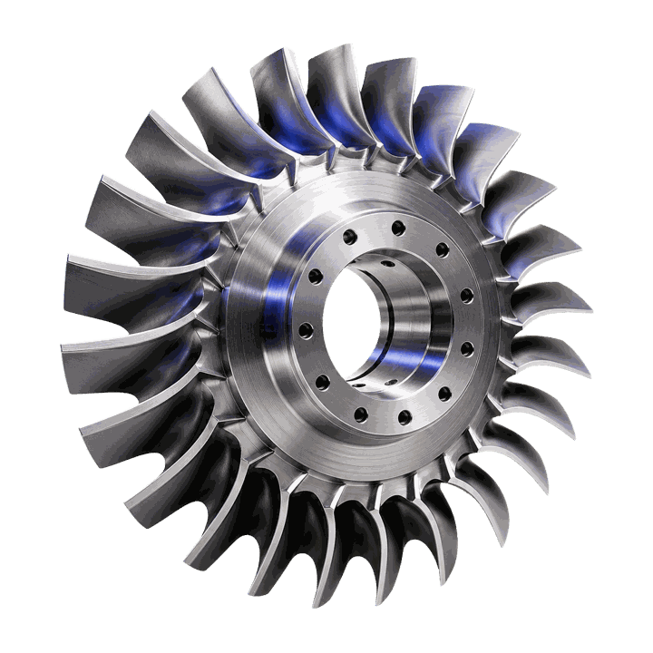
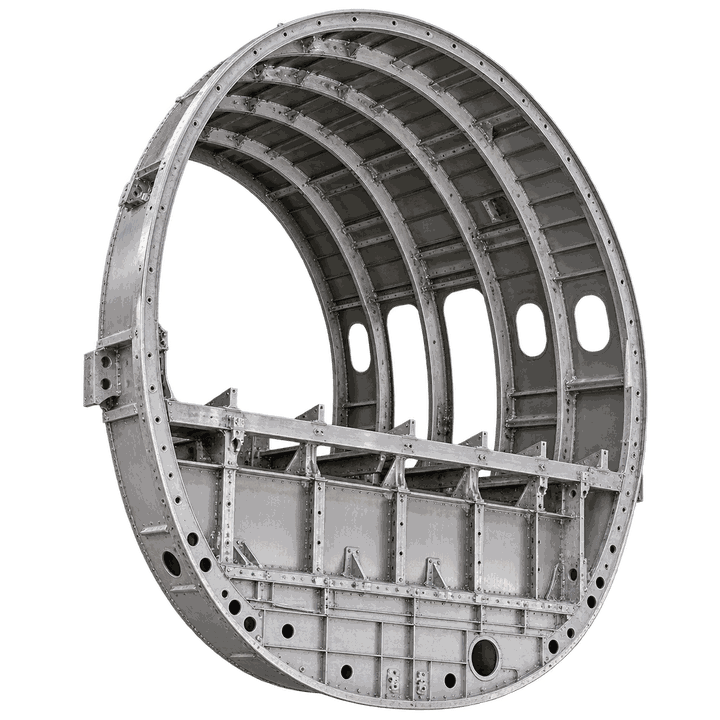
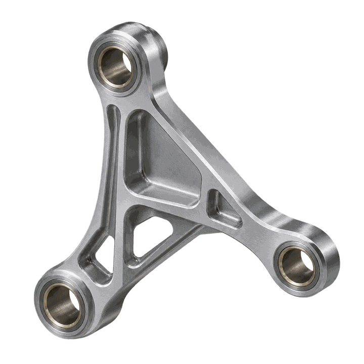
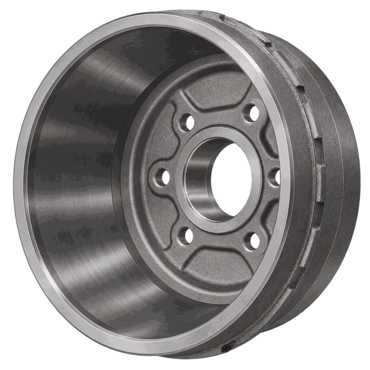
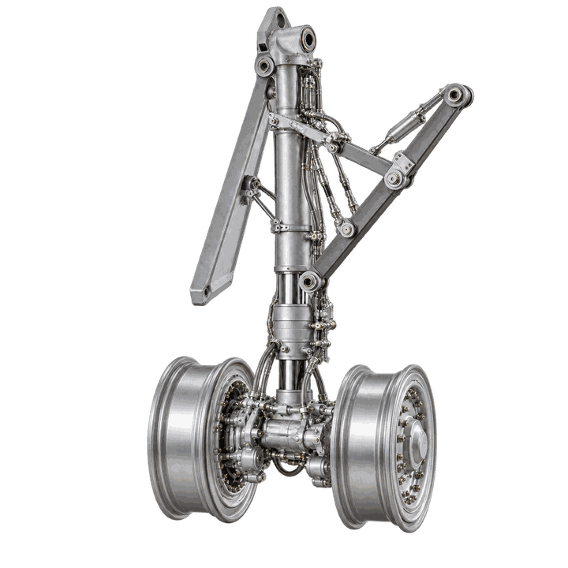
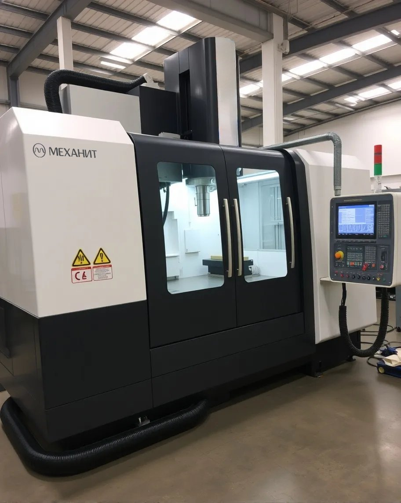
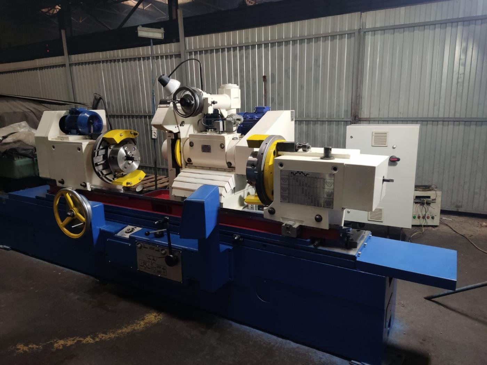
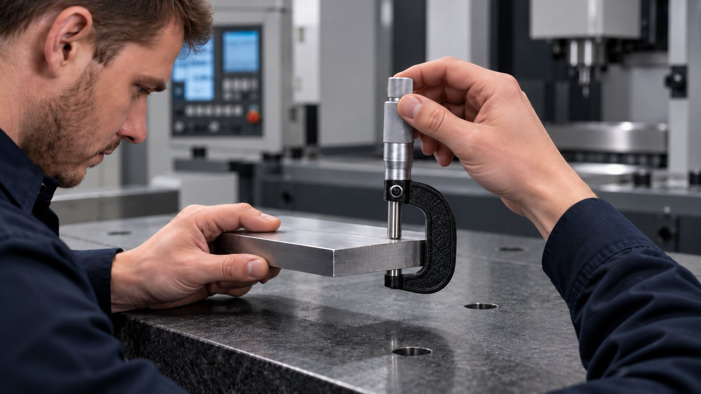

Нервюра / шпангоут
Технологическая задача
Сформировать базовые плоскости, контуры и отверстия детали «Нервюра / шпангоут» без потери геометрии на крупной заготовке.

Решения для деталей из алюминиевых, титановых и жаропрочных сплавов: высокая доля фрезерования, точные базовые поверхности и контроль геометрии.

Сформировать базовые плоскости, контуры и отверстия детали «Нервюра / шпангоут» без потери геометрии на крупной заготовке.

Обработать сложный профиль детали «Турбинные лопатки» с выдерживанием формы лопаток, посадок и балансировочных баз.

Построить маршрут обработки детали «Диафрагма» с понятным разделением операций и подбором оборудования под каждую операцию.

Построить маршрут обработки детали «Качалка» с понятным разделением операций и подбором оборудования под каждую операцию.

Построить маршрут обработки детали «Тормозной барабан» с понятным разделением операций и подбором оборудования под каждую операцию.

Обеспечить точность базовых плоскостей, посадочных отверстий и сопрягаемых поверхностей детали «Корпус амортизатора стойки шасси».
Реальные запуски оборудования на производствах: что поставили, как вводили в эксплуатацию, что получил заказчик.

Внедрения · 26.07.2026Запуск вертикального обрабатывающего центра: чек-лист ввода в эксплуатациюЧитать →
Внедрения · 12.05.2026Запуск круглошлифовального станка: от базовой настройки до контроляЧитать →
Внедрения · 01.07.2026Плоскошлифовальный станок для обработки деталей с высокой точностьюЧитать →Как проходит проект от чертежа до серии — шесть шагов. Нужен участок целиком — комплексное оснащение.
Авиационные детали делают из алюминиевых, титановых и жаропрочных сплавов, и у каждого материала своя технология. Силовые элементы планера — нервюры, шпангоуты, лонжероны — фрезеруют из плиты или поковки, снимая до 90 % материала: важны жёсткость станка, подача СОЖ под давлением и контроль коробления по мере снятия припуска. Лопатки и диафрагмы турбин требуют одновременной обработки по пяти осям и измерения профиля на станке. Детали шасси — корпуса амортизаторов, качалки, тормозные барабаны — это точные посадки под подшипники и уплотнения в высокопрочной стали.
Технолог Механита берёт чертёж детали, материал заготовки и годовую программу, считает маршрут по операциям и подбирает станок под каждую: иногда это один 5-осевой центр, иногда — связка из фрезерного, токарного и шлифовального. Перед поставкой возможна тестовая обработка детали заказчика, на складе в Нижнем Новгороде — демонстрация станка. Пусконаладка, инструктаж операторов, гарантия от 12 месяцев и выезд инженера за 1–2 рабочих дня — в разделе «Сервис».
Пришлите чертёж и требования — технолог Механита разберёт задачу, составит маршрут обработки и подберёт станок под вашу программу выпуска.
Предварительный анализ — без оплаты.